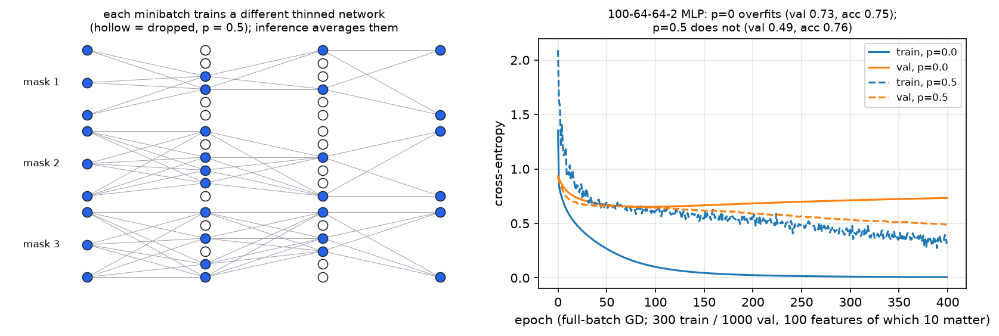
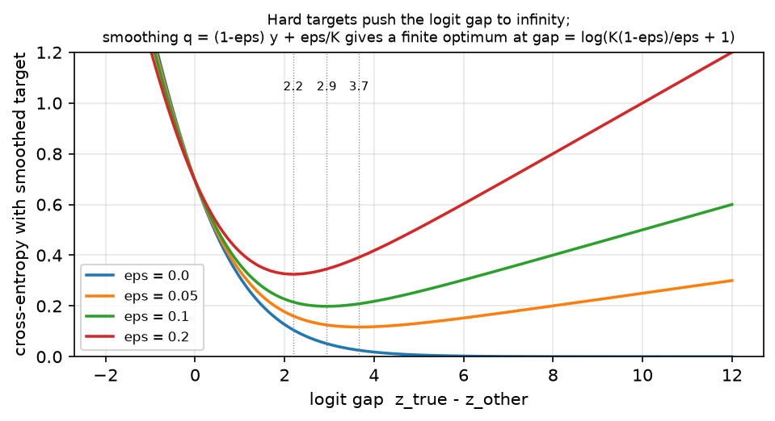

Regularization¶
Why this matters at staff level. Regularisation is where interviewers test whether you reason about generalisation or just recite a list. The strong answers are quantitative: the exact inverted-dropout scaling and why it goes at training time, the finite logit gap label smoothing creates and what it does to calibration, why L2 and weight decay are the same under SGD and different under Adam, and why a 70B model pretrained for one epoch barely uses any of this. At staff level you are also expected to know which knob to turn when the train/val gap opens, and when the right answer is "none of these; get more data or a better prior".
TL;DR: the interview card¶
- Inverted dropout: train \(y = x\odot m/(1-p)\), \(m\sim\mathrm{Bernoulli}(1-p)\); eval \(y = x\). The \(1/(1-p)\) at train time keeps \(\E[y] = x\) so inference is a single deterministic pass. Backward: \(dx = dy\odot m/(1-p)\), the same scaled mask.
- Dropout views: an ensemble of \(2^n\) weight-sharing thinned networks approximated at test time by one network; or multiplicative noise injection whose effect resembles an adaptive \(L_2\) penalty.
- Stochastic depth / DropPath drops a whole residual branch per sample: \(y = x + b\,f(x)/(1-p)\), mask shape \((N,1,\dots,1)\). Usually linearly increasing \(p_\ell = \frac{\ell}{L}p_L\) with depth.
- Label smoothing: \(q = (1-\epsilon)y + \epsilon/K\), gradient \(\boxed{(p - q)/N}\). The optimum moves from an infinite logit gap to \(\boxed{\log\!\big(K(1-\epsilon)/\epsilon + 1\big)}\), that finiteness is the whole effect. Improves calibration and beam search; hurts knowledge distillation.
- Weight decay vs L2: identical for SGD (up to \(\lambda\leftrightarrow\lambda/\eta\)); different for Adam, because an \(L_2\) term added to the gradient gets divided by \(\sqrt{\hat v}\), so parameters with large gradient history are decayed less. AdamW decouples: \(w \leftarrow w - \eta\hat m/(\sqrt{\hat v}+\epsilon) - \eta\lambda w\).
- mixup: \(\tilde x = \lambda x_i + (1-\lambda)x_j\), \(\tilde y = \lambda y_i + (1-\lambda)y_j\), \(\lambda\sim\mathrm{Beta}(\alpha,\alpha)\). With cross-entropy, \(L(\tilde y, p) = \lambda L(y_i,p) + (1-\lambda)L(y_j,p)\). CutMix replaces the convex pixel blend with a pasted box and sets \(\lambda = 1 - \frac{\text{box area}}{HW}\). RandAugment: \(N\) ops sampled uniformly from \(K\), one shared magnitude \(M\), two integers instead of a search.
- Early stopping on a validation metric with patience; for a quadratic loss it is approximately ridge with \(\lambda \approx 1/(\eta t)\).
- Double descent: test error rises to a peak at the interpolation threshold, then falls again as models grow past it, in model size and in epochs. Big models are regularised mostly by data, architecture and the implicit bias of SGD, not by explicit penalties.
1. Intuition first¶
A model generalises when what it learned about the training set also holds off it. Every regulariser in this chapter is one of three moves:
- Add noise so the model cannot rely on any single fragile pathway: dropout, stochastic depth, data augmentation.
- Shrink the hypothesis toward something simple: weight decay, early stopping.
- Soften the target so the model is not pushed to infinite confidence: label smoothing, mixup's soft labels.
The concrete picture for dropout: on each minibatch, half the hidden units are switched off, so the network being trained is a random thinned sub-network. A feature that only works when three specific units co-fire is useless, because those three are simultaneously present only \(1/8\) of the time. The surviving features are the ones that work on their own.

Left: three thinned networks sampled from the same 3-6-6-2 MLP at \(p=0.5\); hollow
circles are dropped units and their edges vanish with them. Each minibatch trains one
such network; at inference all units are present and the inverted scaling makes the
single pass approximate the ensemble average. Right: a real run on a task built to
overfit, 300 training points, 100 input features of which only 10 carry signal, a
100-64-64-2 MLP trained with full-batch gradient descent. Without dropout the training
loss goes to zero and the validation loss turns upward after ~70 epochs (final val
0.73); with \(p = 0.5\) the training loss never reaches zero and the validation loss
keeps falling (final val 0.49). Reproduce with python figures/part03_dropout.py.
For label smoothing the intuition is different and worth holding separately: with a hard one-hot target, the loss \(-\log p_y\) is only minimised when \(p_y \to 1\), which requires the correct logit to run away from the others without bound. The model is never "done"; it keeps growing logits long after it has the right answer, and ends up systematically over-confident. Replacing the target with \(0.9\) (plus \(0.1/K\) spread over the rest) puts the minimum at a finite gap, so training stops pushing.
2. The math¶
2.1 Dropout: scaling, backward, and the two views¶
Let \(m_i \sim \mathrm{Bernoulli}(1-p)\) independently per element. Naive dropout uses \(y = x\odot m\) at train and \(y = (1-p)x\) at test, because \(\E[m_i x_i] = (1-p)x_i\). Inverted dropout moves the correction to training:
Inference is then a plain forward pass with no knowledge of \(p\), which matters because \(p\) can differ per layer, can be annealed during training, and must not leak into an exported graph. Backward: \(y\) is an elementwise product with the constant \(m/(1-p)\), so by the elementwise rule of chapter 2,
with the same mask drawn in the forward pass, you must cache it, not resample.
Ensemble view. With \(n\) droppable units there are \(2^n\) possible masks, each defining a thinned network; dropout trains this exponential family with shared weights, one member per minibatch. Srivastava et al. describe test time as approximating the average of all these thinned networks' predictions by using the single unthinned network with appropriately scaled weights. The approximation is exact for a model that is linear up to the output nonlinearity; for deep nets it is a (very effective) heuristic, and it is exactly the geometric-mean-of-experts intuition to state in an interview.
Noise view. Dropout on the inputs of a linear model with squared loss can be rewritten as the clean objective plus a penalty proportional to \(\frac{p}{1-p}\sum_i \|x_{:,i}\|^2 w_i^2\), a ridge penalty weighted by each feature's empirical second moment. That is the cleanest statement of "dropout \(\approx\) adaptive \(L_2\)" and it explains why dropout and weight decay are partially redundant. Gal and Ghahramani push the view further, casting dropout training as approximate Bayesian inference in a deep Gaussian process, which is what licenses MC dropout: keeping dropout on at inference and averaging \(T\) stochastic passes to get an uncertainty estimate (see Part XIII).
Where dropout goes in a Transformer, and why it is off at inference. The original Transformer applies dropout to the output of each sub-layer before it is added to the residual stream and normalised, and to the sum of embeddings and positional encodings, with \(P_{\text{drop}} = 0.1\) for the base model. Two consequences worth saying: (a) the dropout sits on the branch, never on the identity path, so the residual highway of chapter 2 is never broken; (b) at inference dropout is identity (not "a sampled mask with rescaling") because a stochastic residual path would make a user's output depend on a random seed and would change the expected scale feeding the next norm. The same holds for attention dropout applied to the attention probabilities. A modern wrinkle: large-scale LM pretraining often sets dropout to 0, because a model that sees each token roughly once is in the underfitting regime and has nothing to regularise; dropout comes back for fine-tuning on small datasets.
2.2 Stochastic depth¶
Stochastic depth (Huang et al., 2016) applies the same idea at block granularity: randomly drop a subset of layers during training and bypass them with the identity. For a residual block, with \(b\sim\mathrm{Bernoulli}(1-p)\) drawn per sample,
which is the inverted convention used by timm and torchvision (the original paper instead trained with \(y = x + b f(x)\) and tested with \(y = x + (1-p)f(x)\), the same expectation, the correction on the other side). The mask has shape \((N, 1, \dots, 1)\): a whole branch lives or dies for a given sample, unlike dropout's per-element mask. Because dropped blocks cost no forward or backward compute, expected training time falls by roughly the average drop rate, the paper's twin claims are shorter training and better test error.
The standard schedule is linear decay with depth, \(p_\ell = \frac{\ell}{L}p_L\): early blocks build the features later blocks read, so they are rarely dropped; late blocks are more redundant and can take a higher rate. Modern vision recipes set \(p_L\) by model size, because deeper and wider models need more of it.
2.3 Label smoothing: the derivation that matters¶
Replace the one-hot target \(y\) by
The loss \(L = -\sum_k q_k\log p_k\) decomposes as
i.e. the usual objective plus an \(\epsilon\)-weighted pull of \(p\) toward uniform, up to the constant \(H(u) = \log K\). Since \(L = H(q) + \KL(q\,\|\,p)\) and \(H(q)\) is constant in \(p\), the minimiser is \(p = q\) exactly.
Gradient. Nothing about the \(p - y\) derivation of chapter 2 used \(y\) being one-hot, so with a batch mean:
Effect on the logits. At the optimum \(p = q\). If all \(K-1\) non-target logits are equal, the gap between the true logit and the others is
For \(K = 1000, \epsilon = 0.1\): a gap of \(\approx 9.1\) nats, versus \(\infty\) for \(\epsilon = 0\). (Müller et al. state the equivalent result as \(\log\frac{(K-1)(1-\epsilon)}{\epsilon}\) under the convention \(q_{\text{other}} = \epsilon/(K-1)\); the two differ only in how the \(\epsilon\) mass is spread.)

Cross-entropy against the smoothed target as a function of the logit gap, \(K=2\). With \(\epsilon = 0\) the loss decreases monotonically, training keeps pushing the gap outward forever. With \(\epsilon > 0\) there is a strict minimum at the dotted line, at the gap given by the boxed formula; larger \(\epsilon\) moves it inward.
Effect on calibration. Confidence is \(\max_k p_k\), which is a monotone function of that logit gap. Hard targets drive the gap up throughout training, so the model's confidence keeps rising while its accuracy plateaus: exactly the over-confidence that shows up as a large expected calibration error. Smoothing pins the gap, so confidence converges near \(1-\epsilon\). Müller, Kornblith and Hinton confirm empirically that label smoothing improves calibration, and note a concrete downstream benefit: better calibrated scores make beam search work better. The same paper reports the cost: a teacher trained with label smoothing is worse for knowledge distillation, because smoothing collapses the penultimate representations of each class into tight, equidistant clusters and erases the inter-class similarity information the student was supposed to learn from the teacher's soft logits.
2.4 Weight decay vs \(L_2\), under SGD and under Adam¶
\(L_2\) regularisation adds \(\frac\lambda2\|w\|^2\) to the loss, so the gradient becomes \(g + \lambda w\). Weight decay multiplies the weights by \((1 - \eta\lambda)\) in the update. Under plain SGD:
so they are the same thing. Under Adam they are not. With \(L_2\) folded into the gradient, the moment estimates \(\hat m, \hat v\) are built from \(g + \lambda w\) and the update is
so the penalty term is divided by \(\sqrt{\hat v}\): a weight whose gradient history is large gets its decay shrunk, and a weight with tiny gradients gets decayed aggressively. That is backwards, the large-gradient weights are precisely the ones that grow. Loshchilov and Hutter's fix decouples the two:
Now every weight decays at the same relative rate regardless of its gradient statistics. They report that this decouples the optimal \(\lambda\) from the optimal \(\eta\) and improves Adam's generalisation: at the default learning rate of 0.001, a 15% relative improvement in test error on both CIFAR-10 and ImageNet32×32. Practical consequences: never implement weight decay for Adam by adding \(\lambda w\) to the gradient; and exclude biases, LayerNorm/RMSNorm gains and (usually) embeddings from decay, since shrinking a normalisation gain toward zero shrinks the layer's output for no regularisation benefit. Optimiser details in Part I, optimization.
2.5 Data augmentation with formulas¶
mixup (Zhang et al., 2018) trains on convex combinations of pairs:
Because cross-entropy is linear in the target, the loss factorises, \(L(\tilde y, p) = -\sum_k[\lambda y_{i,k} + (1-\lambda)y_{j,k}]\log p_k = \lambda L(y_i,p) + (1-\lambda)L(y_j,p)\) , which is why every implementation computes two ordinary losses and blends them instead of materialising soft labels. The effect is to force the model to behave approximately linearly between training examples, which the paper links to reduced memorisation of corrupt labels, better robustness to adversarial examples and more stable GAN training. \(\alpha \in [0.2, 0.4]\) is typical for ImageNet CNNs; \(\alpha = 0.8\) for ViT-era recipes. \(\mathrm{Beta}(\alpha,\alpha)\) with small \(\alpha\) puts mass near \(0\) and \(1\), i.e. mostly-unmixed images.
CutMix (Yun et al., 2019) replaces the pixel blend with a paste, on the grounds that blending produces unnatural images and wastes pixels:
with \(M\) a binary box mask whose side lengths are \(\sqrt{1-\lambda}\,(H, W)\) for
\(\lambda\sim\mathrm{Beta}(\alpha,\alpha)\). The label weight must be recomputed from the
actual clipped box, not the sampled \(\lambda\), because boxes near the border get cut
, an easy bug, and the reason the implementation below returns lam_actual.
RandAugment (Cubuk et al., 2019) removes the search phase of AutoAugment: sample \(N\) transformations uniformly from a fixed list of \(K\) (rotate, shear, posterize, solarize, colour, contrast, …) and apply them all at a single shared magnitude \(M\). The search space collapses to two integers \((N, M)\), small enough to grid-search on the target task directly, and \(M\) gives a single dial for regularisation strength that you turn up with model and dataset size. They report 85.0% ImageNet top-1, a 0.6% improvement over the previous automated-augmentation state of the art.
2.6 Early stopping¶
Track a validation metric every \(k\) steps; keep the best checkpoint; stop when it has
not improved by min_delta for patience consecutive checks. The theoretical
connection: for a quadratic loss optimised by gradient descent from \(w_0 = 0\), the
iterate after \(t\) steps along an eigendirection with curvature \(\mu\) is
\(w_t = w^\star(1 - (1-\eta\mu)^t)\), while ridge regression gives
\(w_\lambda = w^\star\mu/(\mu+\lambda)\). Matching them gives \(\lambda \approx 1/(\eta t)\):
stopping early is shrinkage, and training longer is a weaker prior. Directions with
small curvature (the ones least supported by the data) are the last to be fit and the
first to be suppressed, which is exactly what you want a regulariser to do.
2.7 Double descent, and why big models regularise differently¶
The classical bias–variance picture says test error is U-shaped in model capacity. Belkin et al. showed it is not the whole curve: past the interpolation threshold (the capacity at which the model can exactly fit the training data) test error descends again, often below the classical minimum. Nakkiran et al. demonstrated the same phenomenon for modern deep networks, and made two additional points: it happens as a function of training epochs as well as model size, and there are regimes where adding training samples actually hurts test error (because it moves the interpolation threshold). They formalise capacity as "effective model complexity".
Two practical consequences for a staff engineer.
- "Bigger might be worse, then better." If you scale a model and the metric degrades, you may be sitting on the interpolation peak rather than at a fundamental limit; scaling further (or training longer) is a legitimate response, not wishful thinking.
- Explicit regularisers matter less as models grow. Zhang et al. showed deep nets can fit random labels to zero training error, and that this is qualitatively unaffected by explicit regularisation, so capacity control is not what makes them generalise. In the very large regime the binding constraints are data scale and quality, the architecture's inductive bias, and the implicit bias of SGD toward low-norm solutions. This is why frontier LM pretraining uses essentially no dropout, modest weight decay (~0.1), and no augmentation: there is one epoch of a trillion-token corpus and the model is underfitting. Regularisation comes back at fine-tuning scale, where the dataset is small and the model is not.
3. Implementation¶
src/mlbook/nn/regularization.py.
class Dropout:
"""Inverted dropout: train y = x * m / (1 - p); eval y = x."""
def forward(self, x):
if not self.training or self.p == 0.0:
self._scaled_mask = None
return x
keep = self._rng.random(x.shape) >= self.p # same shape as x, bool
self._scaled_mask = keep / (1.0 - self.p) # same shape: 0 or 1/(1-p)
return x * self._scaled_mask # same shape as x
def backward(self, dout):
if self._scaled_mask is None:
return dout # eval mode: identity
return dout * self._scaled_mask # same shape as x
The mask is cached already scaled, so forward and backward multiply by the identical
array, there is no way to accidentally resample or to apply the \(1/(1-p)\) twice. When
training is False the layer is exactly the identity, which is the inference
behaviour argued for in §2.1.
def drop_path(x, p, rng, training=True):
"""Stochastic depth on a residual branch output x (N, ...)."""
if not training or p == 0.0:
return x
mask_shape = (x.shape[0],) + (1,) * (x.ndim - 1) # (N, 1, ..., 1)
keep = rng.random(mask_shape) >= p # (N, 1, ..., 1) bool
return x * keep / (1.0 - p) # (N, ...)
The only difference from dropout is mask_shape: one Bernoulli per sample,
broadcast over every other axis, so a sample's entire branch output is zeroed or
kept. Call it on the branch and add the result to the identity:
x + drop_path(f(x), p, rng).
def label_smoothing_targets(y, num_classes, eps):
return (1.0 - eps) * one_hot(y, num_classes) + eps / num_classes # (N, K)
class LabelSmoothingCrossEntropy:
def forward(self, logits, y):
logp = log_softmax(logits) # (N, K)
self._p = np.exp(logp) # (N, K)
self._q = label_smoothing_targets(y, self.k, self.eps) # (N, K)
return float(-(self._q * logp).sum(axis=-1).mean())
def backward(self):
return (self._p - self._q) / self._p.shape[0] # (N, K) = (p - q)/N
backward is the boxed \((P-Q)/N\); setting \(\epsilon = 0\) recovers
CrossEntropyLoss exactly. The forward still goes through log_softmax, so it is
stable for any logits.
def mixup(x, y_onehot, alpha, rng):
lam = rng.beta(alpha, alpha) if alpha > 0 else 1.0
perm = rng.permutation(x.shape[0]) # (N,) pair each sample with another
x_mix = lam * x + (1.0 - lam) * x[perm] # (N, ...)
y_mix = lam * y_onehot + (1.0 - lam) * y_onehot[perm] # (N, K)
return x_mix, y_mix
def cutmix(x, y_onehot, alpha, rng):
n, _, h, w = x.shape
lam = rng.beta(alpha, alpha) if alpha > 0 else 1.0
perm = rng.permutation(n) # (N,)
cut_ratio = np.sqrt(1.0 - lam) # box side fraction so area ~ 1 - lam
bh, bw = int(h * cut_ratio), int(w * cut_ratio)
cy, cx = rng.integers(h), rng.integers(w)
y0, y1 = np.clip(cy - bh // 2, 0, h), np.clip(cy + bh // 2, 0, h)
x0, x1 = np.clip(cx - bw // 2, 0, w), np.clip(cx + bw // 2, 0, w)
x_mix = x.copy() # (N, C, H, W)
x_mix[:, :, y0:y1, x0:x1] = x[perm][:, :, y0:y1, x0:x1]
lam_actual = 1.0 - (y1 - y0) * (x1 - x0) / (h * w) # recomputed from the CLIPPED box
y_mix = lam_actual * y_onehot + (1.0 - lam_actual) * y_onehot[perm] # (N, K)
return x_mix, y_mix
Both use one \(\lambda\) and one permutation per batch, as the reference implementations
do, pairing every sample with a different partner would need a per-sample \(\lambda\)
and buys nothing. The lam_actual recomputation in cutmix is the clipping fix from
§2.5.
def sgd_step_weight_decay(w, grad, lr, wd, decoupled=True):
if decoupled:
return w - lr * grad - lr * wd * w # AdamW-style: decay independent of the gradient
return w - lr * (grad + wd * w) # L2: decay enters through the gradient
Written side by side because for SGD these are algebraically the same line, the
point of §2.4 being that they stop being the same the moment an adaptive optimiser
rescales grad but not the decay term.
class EarlyStopping:
def step(self, val_loss):
if val_loss < self.best - self.min_delta:
self.best, self.bad_checks = val_loss, 0
else:
self.bad_checks += 1
self.should_stop = self.bad_checks >= self.patience
return self.should_stop
How you'd test it. Dropout: check \(\E[y] \approx x\) over a large array, that the
only values are \(0\) and \(1/(1-p)\), that backward returns the identical scaled mask,
and that eval mode is the identity. DropPath: assert every sample's slice is either
all-zero or all-\(1/(1-p)\) (that is what "drops a whole branch" means) and that the
mean is preserved. Label smoothing: match F.cross_entropy(..., label_smoothing=0.1)
to \(10^{-10}\), finite-difference the gradient, and verify that at the logit gap of
§2.3 the gradient is exactly zero (the finite-optimum claim, tested rather than
asserted). CutMix: verify the changed pixels form a rectangle and that the label
weight equals its area fraction. tests/test_nn_regularization.py.
Full implementation: src/mlbook/nn/regularization.py
"""Dropout, stochastic depth, label smoothing, mixup/CutMix and early stopping
in NumPy (Part III, chapter 6).
"""
from __future__ import annotations
import numpy as np
from mlbook.nn.losses import log_softmax, one_hot
class Dropout:
"""Inverted dropout: train ``y = x * m / (1 - p)`` with ``m ~ Bernoulli(1 - p)``; eval ``y = x``.
Dividing by ``1 - p`` at train time keeps ``E[y] = x`` so inference needs no
rescaling. Backward: ``dx = dy * m / (1 - p)`` (same mask). Any shape.
"""
def __init__(self, p: float = 0.5, seed: int = 0) -> None:
assert 0.0 <= p < 1.0
self.p = p
self.training = True
self._rng = np.random.default_rng(seed)
self._scaled_mask: np.ndarray | None = None
def forward(self, x: np.ndarray) -> np.ndarray:
if not self.training or self.p == 0.0:
self._scaled_mask = None
return x
keep = self._rng.random(x.shape) >= self.p # same shape as x, bool
self._scaled_mask = keep / (1.0 - self.p) # same shape: 0 or 1/(1-p)
return x * self._scaled_mask # same shape as x
def backward(self, dout: np.ndarray) -> np.ndarray:
if self._scaled_mask is None:
return dout
return dout * self._scaled_mask # same shape as x
def drop_path(x: np.ndarray, p: float, rng: np.random.Generator, training: bool = True) -> np.ndarray:
"""Stochastic depth / DropPath on a residual branch output ``x`` ``(N, ...)``.
Drops the *whole branch* for a random subset of samples (mask shape
``(N, 1, ..., 1)``) and rescales the survivors by ``1 / (1 - p)``, the
inverted-dropout convention used by timm and torchvision.
"""
if not training or p == 0.0:
return x
mask_shape = (x.shape[0],) + (1,) * (x.ndim - 1) # (N, 1, ..., 1)
keep = rng.random(mask_shape) >= p # (N, 1, ..., 1) bool
return x * keep / (1.0 - p) # (N, ...)
def label_smoothing_targets(y: np.ndarray, num_classes: int, eps: float) -> np.ndarray:
"""``q = (1 - eps) * onehot(y) + eps / K``. ``y`` ``(N,)`` int -> ``(N, K)``."""
return (1.0 - eps) * one_hot(y, num_classes) + eps / num_classes # (N, K)
class LabelSmoothingCrossEntropy:
"""``L = -(1/N) sum_n sum_k q_{nk} log p_{nk}`` with smoothed targets ``q``.
``backward`` returns ``(p - q) / N`` ``(N, K)`` - the ``p - y`` rule with a soft ``y``.
"""
def __init__(self, num_classes: int, eps: float = 0.1) -> None:
self.k, self.eps = num_classes, eps
self._p: np.ndarray | None = None
self._q: np.ndarray | None = None
def forward(self, logits: np.ndarray, y: np.ndarray) -> float:
logp = log_softmax(logits) # (N, K)
self._p = np.exp(logp) # (N, K)
self._q = label_smoothing_targets(y, self.k, self.eps) # (N, K)
return float(-(self._q * logp).sum(axis=-1).mean())
def backward(self) -> np.ndarray:
assert self._p is not None and self._q is not None
return (self._p - self._q) / self._p.shape[0] # (N, K)
def mixup(x: np.ndarray, y_onehot: np.ndarray, alpha: float, rng: np.random.Generator) -> tuple[np.ndarray, np.ndarray]:
"""mixup (Zhang et al., 2018): ``x~ = lam x_i + (1-lam) x_j``, same for one-hot ``y``.
``lam ~ Beta(alpha, alpha)`` (one draw per batch, as in the reference code);
``j`` is a random permutation of the batch. ``x`` ``(N, ...)``, ``y`` ``(N, K)``.
"""
lam = rng.beta(alpha, alpha) if alpha > 0 else 1.0
perm = rng.permutation(x.shape[0]) # (N,)
x_mix = lam * x + (1.0 - lam) * x[perm] # (N, ...)
y_mix = lam * y_onehot + (1.0 - lam) * y_onehot[perm] # (N, K)
return x_mix, y_mix
def cutmix(x: np.ndarray, y_onehot: np.ndarray, alpha: float, rng: np.random.Generator) -> tuple[np.ndarray, np.ndarray]:
"""CutMix (Yun et al., 2019) on images ``x`` ``(N, C, H, W)``.
Paste a box from ``x[perm]`` into ``x``; the label weight is the *pasted
area fraction*, so ``lam`` is recomputed from the actual box.
"""
n, _, h, w = x.shape
lam = rng.beta(alpha, alpha) if alpha > 0 else 1.0
perm = rng.permutation(n) # (N,)
cut_ratio = np.sqrt(1.0 - lam) # box side fraction so that area ~ 1 - lam
bh, bw = int(h * cut_ratio), int(w * cut_ratio)
cy, cx = rng.integers(h), rng.integers(w)
y0, y1 = np.clip(cy - bh // 2, 0, h), np.clip(cy + bh // 2, 0, h)
x0, x1 = np.clip(cx - bw // 2, 0, w), np.clip(cx + bw // 2, 0, w)
x_mix = x.copy() # (N, C, H, W)
x_mix[:, :, y0:y1, x0:x1] = x[perm][:, :, y0:y1, x0:x1]
lam_actual = 1.0 - (y1 - y0) * (x1 - x0) / (h * w)
y_mix = lam_actual * y_onehot + (1.0 - lam_actual) * y_onehot[perm] # (N, K)
return x_mix, y_mix
class EarlyStopping:
"""Stop when the validation metric has not improved by ``min_delta`` for ``patience`` checks."""
def __init__(self, patience: int = 5, min_delta: float = 0.0) -> None:
self.patience, self.min_delta = patience, min_delta
self.best = np.inf
self.bad_checks = 0
self.should_stop = False
def step(self, val_loss: float) -> bool:
"""Record one validation loss; return True if training should stop."""
if val_loss < self.best - self.min_delta:
self.best, self.bad_checks = val_loss, 0
else:
self.bad_checks += 1
self.should_stop = self.bad_checks >= self.patience
return self.should_stop
def sgd_step_weight_decay(w: np.ndarray, grad: np.ndarray, lr: float, wd: float, decoupled: bool = True) -> np.ndarray:
"""One SGD step with weight decay, in the two forms that differ under Adam.
Coupled (L2 penalty): ``w <- w - lr * (grad + wd * w)``.
Decoupled (AdamW-style): ``w <- w - lr * grad - lr * wd * w``.
For plain SGD they coincide; the distinction matters once ``grad`` is
rescaled by an adaptive optimizer (see Part I, optimization).
"""
if decoupled:
return w - lr * grad - lr * wd * w # same shape as w
return w - lr * (grad + wd * w) # same shape as w
Retype by hand¶
| Symbol | File | Target time | Test |
|---|---|---|---|
Dropout (forward + backward + eval mode) |
src/mlbook/nn/regularization.py |
5 min | pytest tests/test_nn_regularization.py -k dropout -q |
drop_path |
src/mlbook/nn/regularization.py |
3 min | pytest tests/test_nn_regularization.py -k drop_path -q |
label_smoothing_targets + LabelSmoothingCrossEntropy |
src/mlbook/nn/regularization.py |
6 min | pytest tests/test_nn_regularization.py -k label_smoothing -q |
mixup |
src/mlbook/nn/regularization.py |
3 min | pytest tests/test_nn_regularization.py -k mixup -q |
sgd_step_weight_decay (both forms, from the update rules) |
src/mlbook/nn/regularization.py |
2 min | pytest tests/test_nn_regularization.py -k weight_decay -q |
Fine to just read: cutmix (know the formula and the clipping fix; the index
arithmetic is plumbing), EarlyStopping.
Full drill: dropout and label smoothing in NumPy, forward and backward, verified
against torch.nn.functional: 15 minutes. Grader:
pytest tests/test_nn_regularization.py -q. Whiteboard drill: derive the finite
optimal logit gap under label smoothing in 3 minutes.
4. Systems view: cost, failure modes, trade-offs¶
Cost. Dropout is one RNG draw and one multiply per element, cheap in FLOPs, but it adds activation memory (the mask must be cached for backward; frameworks store it as a byte mask or regenerate it from a saved RNG seed) and it is memory-bandwidth-bound like any elementwise op, so an unfused dropout in a Transformer costs real time. Stochastic depth is the opposite: dropped blocks are skipped entirely, so it saves compute proportional to the average drop rate, at the cost of ragged batches on a GPU (in practice the mask is per-sample and the block still runs, so the saving is only realised with per-batch masking). Label smoothing and weight decay are free. mixup/CutMix are free on GPU but RandAugment is CPU-side and can become the data-loader bottleneck for small models, a classic "GPU at 40% utilisation" cause.
Failure modes.
- Dropout left on at inference. Outputs become non-deterministic and, if you also forgot the inverted scaling, systematically mis-scaled by \((1-p)\) per layer, compounding to \((1-p)^L\). The symptom is "eval metrics much worse than training, and different every run". (Deliberately keeping it on is MC dropout, a different thing, done knowingly.)
- Dropout before a BatchNorm. The variance seen by BN differs between train and eval because dropout changes the input variance, so the running statistics are wrong for inference. Put dropout after normalisation, or use LN/RMSNorm.
- Too much dropout in the wrong regime. If the model is underfitting (large-scale pretraining, one epoch), dropout just slows learning. Check the train/val gap before reaching for it.
- Label smoothing on a teacher. Distillation degrades (Müller et al.); if the model will ever be a teacher, keep an un-smoothed variant.
- Label smoothing with \(K = 2\) or extreme class imbalance. The uniform prior is a poor target; \(\epsilon\) that is fine at \(K=1000\) is aggressive at \(K=2\).
- \(L_2\) added to the gradient under Adam. Silently weaker and mis-weighted decay; use AdamW. Also: decaying LayerNorm gains and biases shrinks layer outputs for no benefit, exclude them.
- mixup with a detection/segmentation head. Blending targets is only meaningful for losses that are linear in the label; box regression is not.
When to use what.
| Symptom / setting | First move | Why |
|---|---|---|
| Train loss \(\ll\) val loss, small dataset (< ~100k) | Augmentation, then dropout, then weight decay | Data-space regularisation generalises better than parameter-space. |
| Fine-tuning a pretrained model on a few thousand examples | Early stopping + weight decay + low LR | The prior is in the pretrained weights; avoid destroying it. |
| Deep ViT/ConvNeXt on ImageNet-scale data | Stochastic depth (tuned by model size) + mixup/CutMix + label smoothing + RandAugment | The standard modern recipe; stochastic depth is the strongest single knob for depth. |
| LLM pretraining, ~1 epoch over a huge corpus | Essentially none; weight decay ~0.1, no dropout | Underfitting regime; data is the regulariser. |
| Poorly calibrated classifier used for thresholds/ranking | Label smoothing, or temperature scaling post-hoc | Both pin confidence; temperature scaling does not change the model. |
| Overfitting and already heavily regularised | Get more/better data; revisit the inductive bias | Past a point, penalties trade training signal for nothing. |
| Need uncertainty at inference | MC dropout (\(T\) stochastic passes) or an ensemble | \(T\times\) inference cost; see Part XIII. |
5. In production¶
Toronto: dropout (2014), the paper that made it standard
Srivastava, Hinton, Krizhevsky, Sutskever and Salakhutdinov introduced randomly dropping units and their connections during training to prevent co-adaptation, noting that at test time the effect of averaging the predictions of all the exponentially many thinned networks is easily approximated by using a single unthinned network with smaller weights. They report improvements across vision, speech recognition, document classification and computational biology, with state-of-the-art results on many benchmarks. Source: JMLR 15(56):1929–1958. The Bayesian reinterpretation that licenses MC dropout is Gal and Ghahramani, arXiv:1506.02142.
Google Brain: the Transformer's dropout and label smoothing (2017)
The original Transformer applies dropout to the output of each sub-layer before it is added to the sub-layer input and normalised, and to the sums of embeddings and positional encodings in both stacks, with \(P_{\text{drop}} = 0.1\) for the base model. It also uses label smoothing with \(\epsilon_{ls} = 0.1\), and the paper is explicit about the trade: this hurts perplexity, as the model learns to be more unsure, but improves accuracy and BLEU. That sentence is the best one-line summary of label smoothing in production, you are deliberately giving up likelihood for a better decision rule. Source: arXiv:1706.03762.
Google: label smoothing in Inception-v3 (2015) and in ASR
Label smoothing was introduced in Rethinking the Inception Architecture, whose Section 7 ("Model Regularization via Label Smoothing") derives it as an estimate of the effect of label-dropout during training and applies it as one of the refinements (with factorised convolutions and aggressive regularisation) that produced Inception-v3. In speech, Chorowski and Jaitly analysed an attention-based seq2seq recogniser that was over-confident and produced incomplete transcriptions when combined with a language model; with label smoothing (targets encoding a distribution over characters rather than an indicator) among their fixes, they reached 10.6% WER without a separate LM and 6.7% with a trigram LM on the Wall Street Journal task. Sources: arXiv:1512.00567, arXiv:1612.02695. The systematic study of when it helps and when it hurts (distillation) is arXiv:1906.02629.
Cornell / Facebook / Microsoft: stochastic depth from ResNets to ConvNeXt and Swin
Huang et al. proposed training short networks and using deep ones at test time by
randomly dropping a subset of layers per minibatch and bypassing them with the
identity, reporting reduced training time (dropped blocks do no forward or backward
work) and lower test error. The technique became standard in the ViT-era recipes: ConvNeXt
regularises with stochastic depth and label smoothing, using different rates per
model size (0.1/0.4/0.5/0.5 for ConvNeXt-T/S/B/L), and Swin Transformer applies
stochastic depth with ratio 0.2 for all its models. DeiT established that this
family of recipes could reach 83.1% ImageNet top-1 with an 86M-parameter
convolution-free transformer trained on ImageNet only, on a single machine in under
three days. Sources: arXiv:1603.09382,
arXiv:2201.03545,
arXiv:2103.14030,
arXiv:2012.12877. Reference implementation of
the inverted-scaling DropPath:
timm layers/drop.py.
Google / YouTube: regularising a deep recommender over sparse features
The YouTube recommendation system is described as two deep ReLU networks over concatenated embeddings and dense features, a candidate-generation model trained with softmax over a very large corpus, and a separate ranking model trained with a weighted logistic objective on watch time, and the paper is largely a collection of practical lessons from designing, iterating and maintaining a system at that scale. The regularisation problem in this setting is dominated by the embedding tables: the parameter count lives in millions of sparse IDs, most of which are seen a handful of times, so the failure mode is memorisation of rare IDs rather than over-fitting a dense tower. The levers that follow are ID frequency thresholding and hashing, embedding dimension per feature, and dropout/weight decay on the dense tower, but read the paper for which of these YouTube actually used, rather than taking a generic recipe on faith. Source: Covington, Adams, Sargin, RecSys 2016. Ranking-system design in Part XVII.
Freiburg: AdamW and decoupled weight decay (2019)
Loshchilov and Hutter showed that \(L_2\) regularisation and weight decay are equivalent for standard SGD when rescaled by the learning rate, but not for adaptive methods such as Adam, and proposed decoupling the decay from the gradient-based update. The result: the optimal weight-decay factor becomes independent of the learning rate, and generalisation improves substantially, at Adam's default learning rate of 0.001 they report a 15% relative improvement in test error on both CIFAR-10 and ImageNet32×32. AdamW is now the default optimiser for essentially all Transformer training. Source: arXiv:1711.05101.
OpenAI / Harvard: deep double descent (2019)
Nakkiran et al. showed that across modern architectures and tasks, test performance first gets worse and then gets better as model size increases, that the same non-monotonicity occurs as a function of training epochs, and that there are regimes where more training data hurts. They define "effective model complexity" to unify these. The practical reading for a staff engineer: a metric that degrades when you scale up is not automatically evidence that scaling is wrong. Sources: arXiv:1912.02292; the original double-descent curve, Belkin et al., PNAS 2019, arXiv:1812.11118; and the result that deep nets fit random labels regardless of explicit regularisation, Zhang et al., arXiv:1611.03530.
6. Interview questions and strong answers¶
Write inverted dropout's forward and backward. Why is the scaling at training time?
Train: \(m\sim\mathrm{Bernoulli}(1-p)\) elementwise, \(y = x\odot m/(1-p)\), so
\(\E[y] = x\). Eval: \(y = x\). Backward: \(dx = dy\odot m/(1-p)\) with the same cached
mask. The scaling goes at training time so that inference is a plain forward pass
that does not need to know \(p\): \(p\) often varies per layer, can be annealed, and
would otherwise have to be baked into the exported graph or applied as a
per-layer weight rescale. It also means turning dropout off cannot change the
expected activation scale, so you can flip train/eval without touching
anything else. Staff follow-up: what if you forget the eval branch and leave
dropout on? Outputs become non-deterministic per request and, with the naive
(non-inverted) convention, scaled by \((1-p)^L\) across \(L\) layers. Deliberately
keeping it on and averaging \(T\) passes is MC dropout, a Bayesian approximation,
the same code, a different intent.
Derive what label smoothing does to the logits. Why does it improve calibration?
With \(q = (1-\epsilon)y + \epsilon/K\), the loss is \(H(q) + \KL(q\|p)\), minimised at \(p = q\), and the gradient is \((p - q)/N\). If the non-target logits are equal, the optimal gap is \(\log\frac{q_{\text{true}}}{q_{\text{other}}} = \log(K(1-\epsilon)/\epsilon + 1)\) (about 9.1 nats for \(K=1000, \epsilon=0.1\)) instead of \(\infty\) with hard targets. Confidence is a monotone function of that gap, so hard targets push confidence up indefinitely while accuracy plateaus (over-confidence, large ECE), whereas smoothing pins confidence near \(1-\epsilon\). Müller et al. confirm the calibration improvement and note it makes beam search work better. Staff follow-up: when would you not use it? If the model will be a distillation teacher: smoothing collapses penultimate class representations into tight equidistant clusters and erases the inter-class similarity that the student learns from. Keep an unsmoothed teacher. Also note the Transformer paper's honest trade: label smoothing hurts perplexity while improving BLEU, so do not use it if log-likelihood is the metric you ship on.
Why do L2 and weight decay differ for Adam but not for SGD?
For SGD, \(w - \eta(g + \lambda w) = (1-\eta\lambda)w - \eta g\), the same update. For Adam, folding \(\lambda w\) into the gradient means the penalty is passed through the moment estimates and then divided by \(\sqrt{\hat v}\), so a parameter with large historical gradients is decayed less and one with tiny gradients is decayed aggressively, the opposite of what you want. AdamW applies the decay to the weights directly, outside the adaptive update: \(w \leftarrow w - \eta\hat m/(\sqrt{\hat v}+\epsilon) - \eta\lambda w\). Loshchilov and Hutter report this decouples the optimal \(\lambda\) from \(\eta\) and gives ~15% relative test-error improvement at Adam's default LR. Staff follow-up: which parameters do you exclude from decay? Biases, LayerNorm/RMSNorm gains, and usually embeddings, decaying a normalisation gain toward zero just shrinks the layer's output and gives no capacity control.
You have a ViT that overfits ImageNet-1k. Rank your regularisers and justify the order.
First, data-space: RandAugment (one magnitude dial that I can scale with model size) plus mixup/CutMix, these expand the effective dataset and are what the DeiT/ConvNeXt-family recipes lean on hardest. Second, stochastic depth, tuned by model size (ConvNeXt uses 0.1 → 0.5 from Tiny to Large; Swin uses 0.2): it is the strongest single knob for deep models and it saves compute rather than costing it. Third, label smoothing at 0.1, nearly free, helps calibration. Fourth, weight decay via AdamW, excluding norms and biases. Dropout inside the blocks I would try last, because for ViTs at this scale stochastic depth generally subsumes it. Before any of it, I would confirm it really is overfitting (train/val gap, not a distribution shift or a leaky validation split). Staff follow-up: how do you tune them together? Pick one scalar per family, scale all of them with model size in a coordinated sweep, and always compare at matched compute rather than matched epochs.
Why does large-scale LLM pretraining use almost no dropout?
Dropout fights over-fitting, and a model trained for roughly one epoch over a trillion-token corpus is under-fitting: it has not memorised the training set and will never see most examples twice, so there is nothing for dropout to prevent. Adding it just injects noise into an already noisy single-pass objective and slows convergence at fixed compute. What is left is modest weight decay (~0.1) for conditioning, and the real regularisers are the data (scale, dedup, quality filtering) and the architecture. Dropout returns at fine-tuning scale, where the dataset is thousands of examples and the model is enormous. Staff follow-up: what would change your mind? Evidence of memorisation, verbatim training-data regurgitation, or multi-epoch training on a small high-quality corpus, where dropout and augmentation become relevant again.
Explain double descent and what it changes about how you run experiments.
Classically, test error is U-shaped in capacity. Belkin et al. and Nakkiran et al. showed the curve continues: past the interpolation threshold, where the model can exactly fit the training data, test error descends again, often below the classical minimum, and the same non-monotonicity appears in epochs, with regimes where more data hurts. Practically: (1) I do not conclude "bigger is worse" from a single scale-up; I check whether I am near the interpolation peak and try scaling further. (2) I do not tune model size on a capacity sweep with a fixed budget, because the curve is not unimodal. (3) I trust compute-matched scaling curves over single-point comparisons. It also reframes regularisation: Zhang et al. showed deep nets fit random labels with or without explicit regularisers, so what makes them generalise is the data, the architecture's inductive bias and SGD's implicit bias, the penalties are a small correction on top.
How does stochastic depth differ from dropout, mechanically and in effect?
Mechanically: the Bernoulli mask has shape \((N,1,\dots,1)\) instead of the full activation shape, so it drops an entire residual branch for a sample rather than individual units, and it lives on the branch only, the identity path is never interrupted. With the inverted convention, \(y = x + b\,f(x)/(1-p)\) at train and \(y = x + f(x)\) at eval. In effect it regularises depth: the network is trained as an ensemble of shallower networks, which both shortens training (dropped blocks do no work) and improves test error, per Huang et al. The rate is usually scheduled linearly with depth, \(p_\ell = \frac{\ell}{L}p_L\), because early blocks carry the features every later block reads. Staff follow-up: why is it preferred over dropout in modern vision transformers? It targets the thing that is actually over-parameterised (depth), it interacts cleanly with LayerNorm (unlike dropout before BatchNorm), and it reduces rather than increases training cost.
7. Exercises¶
★ Expected value under naive vs inverted dropout. Show that naive dropout (\(y = x\odot m\) at train, \(y = (1-p)x\) at test) and inverted dropout give the same expected activations, and explain why every framework chose inverted.
Solution
Naive: \(\E[y_{\text{train}}] = (1-p)x\), and test uses \((1-p)x\), matched. Inverted: \(\E[y_{\text{train}}] = x\), and test uses \(x\), also matched. Inverted is preferred because the inference path is then independent of \(p\): no per-layer rescale to apply or export, nothing to change when \(p\) is annealed or set per layer, and toggling train/eval cannot silently change the activation scale.
★ Logit gap. Compute the optimal logit gap under label smoothing for \((K,\epsilon) = (2, 0.1)\), \((1000, 0.1)\), \((1000, 0.01)\), and state the corresponding maximum softmax confidence.
Solution
\(\log(K(1-\epsilon)/\epsilon + 1)\): \((2,0.1)\to\log 19 = 2.94\); \((1000,0.1)\to\log(9001) = 9.10\); \((1000,0.01)\to\log(99001) = 11.50\). Confidence is \(q_{\text{true}} = 1-\epsilon+\epsilon/K\): \(0.95\), \(0.9001\), \(0.99001\). Note \(\epsilon\) controls confidence directly and \(K\) only shifts the gap, which is why \(\epsilon = 0.1\) is aggressive for \(K=2\).
★★ mixup loss identity (coding). Verify numerically that for cross-entropy with one-hot labels, \(L(\tilde y, p) = \lambda L(y_i, p) + (1-\lambda)L(y_j, p)\), and explain why implementations exploit this.
Solution
import numpy as np
from mlbook.nn.losses import log_softmax, one_hot
rng = np.random.default_rng(0)
z = rng.normal(size=(8, 5)); yi = rng.integers(0, 5, 8); yj = rng.integers(0, 5, 8)
lam = 0.37
logp = log_softmax(z) # (8, 5)
ymix = lam * one_hot(yi, 5) + (1 - lam) * one_hot(yj, 5) # (8, 5)
soft = -(ymix * logp).sum(1).mean()
blend = lam * -logp[np.arange(8), yi].mean() + (1 - lam) * -logp[np.arange(8), yj].mean()
assert abs(soft - blend) < 1e-12
cross_entropy kernel (no \((N,K)\) soft-label
tensor to materialise), which matters when \(K\) is large.
★★ Early stopping as shrinkage (coding). For the quadratic \(L(w) = \tfrac12\mu(w-w^\star)^2\) with gradient descent from \(w_0 = 0\), show \(w_t = w^\star(1-(1-\eta\mu)^t)\) and compare numerically against ridge \(w_\lambda = w^\star\mu/(\mu+\lambda)\) with \(\lambda = 1/(\eta t)\) for several \(\mu\).
Solution
\(w_{t+1} = w_t - \eta\mu(w_t - w^\star) = (1-\eta\mu)w_t + \eta\mu w^\star\); by induction \(w_t = w^\star(1-(1-\eta\mu)^t)\).
import numpy as np
eta, t, wstar = 0.05, 40, 1.0
for mu in [0.01, 0.1, 1.0, 5.0]:
gd = wstar * (1 - (1 - eta * mu) ** t)
ridge = wstar * mu / (mu + 1 / (eta * t))
print(mu, round(gd, 4), round(ridge, 4))
★★ CutMix label weight (coding). Show empirically that using the sampled \(\lambda\) instead of the clipped box's actual area fraction biases the labels, by measuring the mean absolute difference over 1000 draws on a \(32\times32\) image.
Solution
import numpy as np
rng = np.random.default_rng(0); h = w = 32; diffs = []
for _ in range(1000):
lam = rng.beta(1.0, 1.0)
r = np.sqrt(1 - lam); bh, bw = int(h * r), int(w * r)
cy, cx = rng.integers(h), rng.integers(w)
y0, y1 = np.clip(cy - bh // 2, 0, h), np.clip(cy + bh // 2, 0, h)
x0, x1 = np.clip(cx - bw // 2, 0, w), np.clip(cx + bw // 2, 0, w)
diffs.append(abs(lam - (1 - (y1 - y0) * (x1 - x0) / (h * w))))
print(np.mean(diffs), np.max(diffs))
★★★ Dropout as adaptive \(L_2\). For linear regression \(\hat y = x^\top w\) with squared loss and dropout applied to the inputs (\(\tilde x = x\odot m/(1-p)\)), compute \(\E_m[L(\tilde x, w)]\) and identify the induced penalty. What does it say about the relationship between dropout and weight decay?
Solution sketch
Let \(\tilde x_i = x_i m_i/(1-p)\) with \(\E[m_i] = 1-p\), so \(\E[\tilde x_i] = x_i\) and \(\mathrm{Var}(\tilde x_i) = x_i^2\frac{p}{1-p}\). For a single example, \(\E_m[(y - \tilde x^\top w)^2] = (y - x^\top w)^2 + \mathrm{Var}_m(\tilde x^\top w) = (y - x^\top w)^2 + \frac{p}{1-p}\sum_i x_i^2 w_i^2\), using independence of the \(m_i\). Averaging over the dataset gives the clean least-squares loss plus \(\frac{p}{1-p}\sum_i \|X_{:,i}\|^2 w_i^2 / N\), a ridge penalty weighted by each feature's second moment. So dropout is \(L_2\) in a rescaled parameterisation: it penalises weights on high-variance features more. Two implications: dropout and weight decay are partly redundant (tune them together, not independently), and dropout is scale-adaptive in a way plain \(L_2\) is not, which is also why dropout interacts with normalisation layers that already fix the input scale.
References¶
- Srivastava, N., Hinton, G., Krizhevsky, A., Sutskever, I., Salakhutdinov, R. (2014). Dropout: A Simple Way to Prevent Neural Networks from Overfitting. JMLR 15(56):1929–1958. jmlr.org
- Gal, Y., Ghahramani, Z. (2016). Dropout as a Bayesian Approximation. arXiv:1506.02142
- Huang, G., Sun, Y., Liu, Z., Sedra, D., Weinberger, K. (2016). Deep Networks with Stochastic Depth. arXiv:1603.09382
- Szegedy, C. et al. (2016). Rethinking the Inception Architecture for Computer Vision. arXiv:1512.00567
- Müller, R., Kornblith, S., Hinton, G. (2019). When Does Label Smoothing Help? arXiv:1906.02629
- Chorowski, J., Jaitly, N. (2017). Towards better decoding and language model integration in sequence to sequence models. arXiv:1612.02695
- Vaswani, A. et al. (2017). Attention Is All You Need. arXiv:1706.03762
- Loshchilov, I., Hutter, F. (2019). Decoupled Weight Decay Regularization (AdamW). ICLR. arXiv:1711.05101
- Zhang, H., Cisse, M., Dauphin, Y. N., Lopez-Paz, D. (2018). mixup: Beyond Empirical Risk Minimization. ICLR. arXiv:1710.09412
- Yun, S. et al. (2019). CutMix. arXiv:1905.04899
- Cubuk, E. D., Zoph, B., Shlens, J., Le, Q. V. (2019). RandAugment. arXiv:1909.13719
- Touvron, H. et al. (2021). Training data-efficient image transformers & distillation through attention (DeiT). arXiv:2012.12877
- Liu, Z. et al. (2022). A ConvNet for the 2020s (ConvNeXt). arXiv:2201.03545 · Liu, Z. et al. (2021). Swin Transformer. arXiv:2103.14030
- Nakkiran, P. et al. (2020). Deep Double Descent. ICLR. arXiv:1912.02292
- Belkin, M., Hsu, D., Ma, S., Mandal, S. (2019). Reconciling modern machine learning practice and the bias-variance trade-off. PNAS 116(32). arXiv:1812.11118
- Zhang, C. et al. (2017). Understanding deep learning requires rethinking generalization. arXiv:1611.03530
- Covington, P., Adams, J., Sargin, E. (2016). Deep Neural Networks for YouTube Recommendations. RecSys. research.google
- Wightman, R. timm.
layers/drop.py(DropPath reference implementation). github.com/huggingface/pytorch-image-models